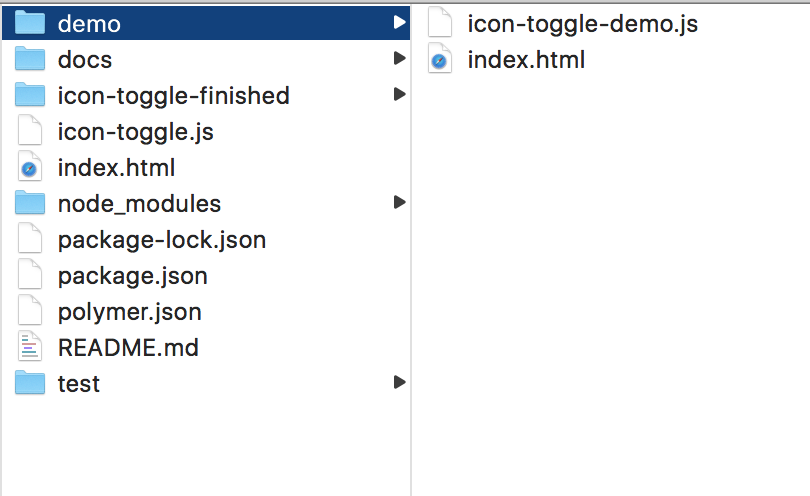

In this codelab, you'll learn how to build elements using Polymer 3.0. You'll create a simple Polymer element, a toggle button. The finished button will look something like this:

You'll be able to use it with simple markup like this:
<icon-toggle></icon-toggle>This project introduces you to most of the key concepts in working with Polymer.
Don't worry if you don't understand everything. Each of the concepts presented here is described in detail in the Polymer documentation.
To start the tutorial, you will need some software:
- A command line, like xterm or bash
- A text editor (preferably one that does code highlighting, like Visual Studio Code, Atom or Brackets )
- The latest version of Chrome
You'll also need to have some basic skills and knowledge:
- Using a command line
- Basic HTML, CSS and JavaScript
- Basic understanding of programming concepts such as variables, functions, conditionals, and loops
- Basic understanding of object-oriented programming concepts such as objects, classes, abstraction, and encapsulation
- That said, I assume you know about as much about web development as I do (very little!). This tutorial is for beginners.
Install Git
Git is a version control tool.
- Run the Git installer.
- Check whether Git is correctly installed:
git --version
If all is well, Git tells you its version info:
If you don't see a Git version number git version 2.18.0 at this point, you may need to refer to the official Git installation instructions.
Install Node and npm
Node is a JavaScript runtime environment. npm is a package manager for Node. They will both be installed when you install Node.
- Download and run the Node installer (this will install npm as well).
- Update npm to the latest version:
npm install npm@latest -g - Check that Node and npm are correctly installed. Run the following commands:
node -v is v8.10.0 at this point
npm -v is 5.8.0 at this point
If you don't see version numbers for Node and npm, you may need to refer to the official installation instructions on the npm website.
Install the Codelab
Clone this repo:
git clone https://github.com/Polymer-Japan/polymer3-first-element.git
Install Dependencies
Change directory to your local repo and install dependencies with npm
cd polymer3-first-elements npm install
Fetching the components may take some time if your internet connection is slow.
When the installation finishes, your project folder should look something like this:

The main file you'll work with is icon-toggle.js, which contains the definition for your custom element.
Run the demo
Cool - you made an app! It's that easy. The app doesn't do much yet, but let's take a look at it.
npm start
The Polymer development server starts up, and opens the demo in a new browser tab. You'll see some text where the icon toggles should appear. It doesn't look very interesting, but it shows everything is working.

Next, you'll create a simple element that displays an icon.
In this step, you'll learn about:
- Creating a custom element using Polymer.
- Working with Shadow DOM.
Edit icon-toggle.js
Open icon-toggle.js in the root on the your Editor. This file contains the skeleton of a custom element.
Start by taking a look at the existing code:
Starting code—ES6 Module imports
import {html, PolymerElement} from '@polymer/polymer/polymer-element.js';
import '@polymer/iron-icons/iron-icons.js';
import '@polymer/iron-icon/iron-icon.js';
Key information:
- The
importis an ES6 Module import. This works fine for importing application-specific elements and modules. - These lines import the Polymer library and another custom element called
iron-iconsandiron-iconthat you'll use later in this step.
Next is the definition of the element itself:
Starting code—Shadow DOM template
class IconToggle extends PolymerElement {
static get template() {
return html`
<style>
/* local DOM styles go here */
:host {
display: inline-block;
}
</style>
<!-- local DOM goes here -->
<span>Not much here yet.</span>
`;
}
}
Key information:
- To define a custom element, create a class that extends
PolymerElement. - To specify the element's template, define a
templateproperty on the element's constructor. For example, you can create a statictemplategetter. The template is retrieved and processed when the first instance of the element is upgraded. - The template getter must return an instance of HTMLTemplateElement. Use the
htmlhelper function to generate an HTMLTemplateElement instance from a JavaScript template literal. (You can import thehtmlhelper from thepolymer-element.jsmodule.) - The
<style>element inside thetemplatelets you define styles that are scoped to the Shadow DOM, so they don't affect the rest of the document. - The
:hostpseudo-class matches the custom element you're defining (in this case, the<icon-toggle>). This is the element that contains or hosts the Shadow DOM tree.
Starting code—element registration
window.customElements.define('icon-toggle', IconToggle);
Key information:
- To register a custom element, pass the created class to the
customElements.definemethod. - By specification, the custom element's name must start with a lower-case ASCII letter and must contain a dash (-).
Create the shadow DOM structure
Now that you're familiar with the basic layout of the element, add something useful to its shadow DOM template.
Find the <span> below the local DOM goes here comment:
icon-toggle.js—before
<!-- local DOM goes here -->
<span>Not much here yet.</span>
`; Replace the <span> and its contents with the <iron-icon> tag below:
icon-toggle.js—after
<!-- local DOM goes here -->
<iron-icon icon="polymer">
</iron-icon>
`;Key information:
- The
<iron-icon>element is a custom element that renders an icon. Here it's hard-coded to use an icon named "polymer".
Style the shadow DOM
There are a number of new CSS selectors to work with shadow DOM. The icon-toggle.js file already includes a :host selector, discussed earlier, to style the top-level <icon-toggle> element.
To style the <iron-icon> element, add the following CSS inside the <style> tag after the existing content:
icon-toggle.js
<style>
/* local styles go here */
:host {
display: inline-block;
}
iron-icon {
fill: rgba(0,0,0,0);
stroke: currentcolor;
}
:host([pressed]) iron-icon {
fill: currentcolor;
}
</style>Key information:
- The
<iron-icon>tag uses an SVG icon. Thefillandstrokeproperties are SVG-specific CSS properties. They set the fill color and the outline color for the icon, respectively. - The
:host()function matches the host element if the selector inside the parentheses matches the host element. In this case,[pressed]is a standard CSS attribute selector, so this rule matches when theicon-togglehas apressedattribute set on it.
Your custom element definition should now look like this:
icon-toggle.js
import {html, PolymerElement} from '@polymer/polymer/polymer-element.js';
import '@polymer/iron-icons/iron-icons.js';
import '@polymer/iron-icon/iron-icon.js';
/**
* `icon-toggle`
* Get started creating custom elements with Polymer 3
*
* @customElement
* @polymer
* @demo demo/index.html
*/
class IconToggle extends PolymerElement {
static get template() {
return html`
<style>
/* local styles go here */
:host {
display: inline-block;
}
iron-icon {
fill: rgba(0,0,0,0);
stroke: currentcolor;
}
:host([pressed]) iron-icon {
fill: currentcolor;
}
</style>
<!-- local DOM goes here -->
<iron-icon icon="polymer">
</iron-icon>
`;
}
}
window.customElements.define('icon-toggle', IconToggle);Reload the demo. You should see the toggle buttons show up with the hard-coded icon.
You'll notice that one toggle is styled as pressed, because the pressed attribute is set in the demo. But click all you want, the button won't toggle yet; there's no code to change the pressed property.
Right now, the element doesn't do much. In this step, you'll give it a basic API, allowing you to configure the icon from markup, using an attribute, or from JavaScript, using a property.
First, a bit of data binding. Find the <iron-icon> element and change the value of the icon attribute from "polymer" to "[[toggleIcon]]".
icon-toggle.js
<!-- local DOM goes here -->
<iron-icon icon="[[toggleIcon]]">
</iron-icon>Key information:
toggleIconis a property you'll define on the toggle button element. It doesn't have a default value yet.- The
icon="[[toggleIcon]]"assignment is a data binding. It links your element'stoggleIconproperty with the<iron-icon>'siconproperty.
You could now use your element and set the toggleIcon property in markup or using JavaScript, as shown in the following examples. (You don't need to add this code to your project.)
Example—setting the icon using markup
<icon-toggle toggle-icon="favorite"></icon-toggle>Example—setting the icon from JavaScript
var myToggle = document.querySelector('icon-toggle');
myToggle.toggleIcon = "favorite";Next, add a declaration for the toggleIcon property.
Add the following static get properties function to the IconToggle class:
icon-toggle.js
class IconToggle extends PolymerElement {
static get properties() {
return {
toggleIcon: String,
};
}
Key information:
- To declare properties, add a static
propertiesgetter to the element's class. The getter should return an object containing property declarations. - A simple property declaration like this one just includes the type (in this case,
String).
The properties object also supports several more features. Add the following lines to add support for the pressed property:
icon-toggle.js
static get properties() {
return {
toggleIcon: String,
pressed: {
type: Boolean,
value: false,
notify: true,
reflectToAttribute: true
}
};
}
Key information:
- For this more complicated property, you supply a configuration object with several fields.
- The
valuespecifies the property's default value. - The
notifyproperty tells Polymer to generate property change events when the property value changes. This lets the change be observed by other nodes. - The
reflectToAttributeproperty tells Polymer to update the corresponding attribute when the property changes. This lets you style the element using an attribute selector, likeicon-toggle[pressed].
Now your element has pressed and toggleIcon properties working.
Reload the demo, and you should see star and heart icons instead of the hard-coded icon from the previous step:

If you're curious about where the stars and hearts come from, you can take a peek at demo/icon-toggle-demo.js and see lines like this:
<icon-toggle toggle-icon="star"></icon-toggle>
<icon-toggle toggle-icon="star" pressed></icon-toggle>Of course, a button isn't a button if you can't click it. To toggle the button, add an event listener. To add event listeners on the host element (in this case, icon-toggle), add the GestureEventListeners mixin to the element:
icon-toggle.js
import {html, PolymerElement} from '@polymer/polymer/polymer-element.js';
import {GestureEventListeners} from '@polymer/polymer/lib/mixins/gesture-event-listeners.js';
import * as Gestures from '@polymer/polymer/lib/utils/gestures.js';
import '@polymer/iron-icons/iron-icons.js';
import '@polymer/iron-icon/iron-icon.js';
/**
* `icon-toggle`
* Get started creating custom elements with Polymer 3
*
* @customElement
* @polymer
* @demo demo/index.html
*/
class IconToggle extends GestureEventListeners(PolymerElement) {
constructor() {
super();
Gestures.addListener(this, 'tap', this.toggle.bind(this));
}
toggle() {
this.pressed = !this.pressed;
}
static get properties() {
Key information:
- Add gesture support by importing and using the
GestureEventListeners - The
tapevent is generated by Polymer's gesture system when the user clicks or taps on a target with a mouse or finger. - Use the
addListener/removeListenermethods from thegesturesmodule (@polymer/polymer/lib/utils/gestures.js).You can use theaddListenerfunction to add a listener to the host element.
Save the icon-toggle.js file and reload the demo again. You should be able to press the button and see it toggle between its pressed and unpressed states.

You now have a button that's basically functional. But it's stuck using the existing text color for both pressed and unpressed states. What if you want to get a little flashier?
Shadow DOM helps prevent users from styling your element's internals by accident. Using custom properties, your element can expose a specific set of user-styleable properties.
You apply a custom property inside your element using the `var` function.
background-color: var(--my-custom-property, defaultValue);Where --my-custom-property is a custom property name, always starting with two dashes (--), and defaultValue is an (optional) CSS value that's used if the custom property isn't set.
Edit your element's <style> tag and replace the existing fill and stroke values with custom properties:
icon-toggle.js
<style>
/* local styles go here */
:host {
display: inline-block;
}
iron-icon {
fill: var(--icon-toggle-color, rgba(0,0,0,0));
stroke: var(--icon-toggle-outline-color, currentcolor);
}
:host([pressed]) iron-icon {
fill: var(--icon-toggle-pressed-color, currentcolor);
}
</style>Because of the default values, you can still style the <icon-toggle> just by setting color, but now you have other options. Open up demo/icon-toggle-demo.js and set the new properties:
icon-toggle-demo.js
<style>
:host {
font-family: sans-serif;
--icon-toggle-color: lightgrey;
--icon-toggle-outline-color: black;
--icon-toggle-pressed-color: red;
};
</style>Reload the demo again to get colorful.

That's it — you're finished. You've created an element that has a basic UI, API, and custom styling properties.
If you have any trouble getting the element working, check out the finished version.